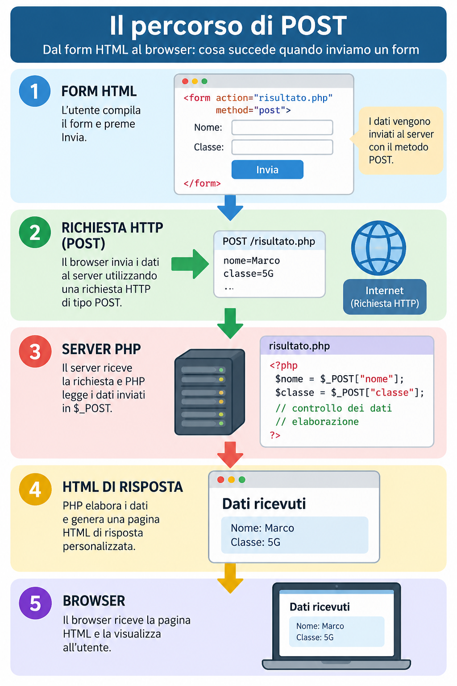

Confrontare
Distinguere GET e POST osservando l’URL e il codice del form.
Lezione 4 · M0 · Informatica · Classi quinte
Cambiamo una parola nel form, osserviamo la richiesta e costruiamo una risposta PHP con semplici controlli.
Ripasso iniziale
Nella Lezione 2 il form usava il metodo GET:
<form action="risultato.php" method="get">Dopo l’invio, i dati comparivano nella query string dell’URL:
risultato.php?nome=Marco&classe=5GAl termine
Distinguere GET e POST osservando l’URL e il codice del form.
Leggere con $_POST i dati inviati dal browser.
Verificare il metodo della richiesta e riconoscere i campi obbligatori rimasti vuoti.
Primo passaggio
Il form resta quasi identico. Sostituiamo soltanto method="get" con method="post":
<form action="risultato.php" method="post">
<label for="nome">Nome:</label>
<input type="text" id="nome" name="nome">
<button type="submit">Invia</button>
</form>Anche nella pagina PHP cambia un solo nome: da $_GET a $_POST.
<?php
$nome = $_POST["nome"];
echo "Ciao " . $nome;
?>Apri nel browser il form usando un indirizzo che inizia con http://localhost:8000.
La pagina risultato.php riceve il dato e genera il saluto.
Il nome non compare più dopo un punto interrogativo: con POST i dati non vengono inseriti nella query string.
Confronto essenziale
| GET | POST |
|---|---|
| I dati sono visibili nella query string dell’URL. | I dati non sono presenti nella query string. |
PHP li legge con $_GET. | PHP li legge con $_POST. |
| È utile, per esempio, per ricerche e parametri. | È utile, per esempio, per inviare dati di un modulo. |
| L’URL con i parametri può essere copiato e riaperto. | I dati inviati non sono incorporati nell’URL. |
Collegamento fondamentale
Come con GET, il testo scelto nell’attributo name deve coincidere con il testo usato tra parentesi quadre in PHP.
name="nome" → $_POST["nome"]Il valore scritto nel campo nome.
name="cognome" → $_POST["cognome"]Il valore scritto nel campo cognome.
name="classe" → $_POST["classe"]Il valore scritto nel campo classe.
Prima di elaborare
PHP può verificare con quale metodo HTTP è arrivata la richiesta:
<?php
if ($_SERVER["REQUEST_METHOD"] === "POST") {
// Il form è stato inviato con POST.
}
?>Per ora usiamo $_SERVER["REQUEST_METHOD"] soltanto come controllo: non serve approfondire l’intera struttura $_SERVER.
<?php
if ($_SERVER["REQUEST_METHOD"] === "POST") {
$nome = trim($_POST["nome"] ?? "");
if ($nome === "") {
echo "Inserisci il nome.";
} else {
echo "Ciao " . htmlspecialchars($nome);
}
}
?>trim()Elimina gli spazi inutili all’inizio e alla fine del testo.
?? ""Usa una stringa vuota se il valore non è presente, evitando un avviso di PHP.
htmlspecialchars()Prepara il testo inserito dall’utente per mostrarlo in modo più sicuro dentro l’HTML.
Questi sono controlli iniziali e non una trattazione completa della sicurezza o della validazione.
Esercitazione guidata
Riprendiamo lo stesso prodotto della Lezione 2. Questa volta invieremo nome, cognome, età e classe con POST e controlleremo i campi essenziali.
Prodotto atteso: un form in index.html e una pagina scheda.php che genera la scheda usando i dati ricevuti.
Prepara quattro etichette associate ai campi nome, cognome, età e classe. Usa gli attributi name="nome", name="cognome", name="eta" e name="classe".
Scrivi action="scheda.php" e method="post" nel tag <form>.
In scheda.php verifica il metodo della richiesta, poi assegna ogni valore di $_POST a una variabile. Usa trim() e ?? "".
Genera il titolo Scheda studente e una riga per ciascun valore. Usa htmlspecialchars() quando inserisci i dati nell’HTML.
Se nome, cognome o classe sono vuoti, mostra un messaggio e non generare la scheda. Se sono compilati, mostra il risultato completo.
<form action="scheda.php" method="post">
<label for="nome">Nome:</label>
<input type="text" id="nome" name="nome"><br>
<label for="cognome">Cognome:</label>
<input type="text" id="cognome" name="cognome"><br>
<label for="eta">Età:</label>
<input type="number" id="eta" name="eta"><br>
<label for="classe">Classe:</label>
<input type="text" id="classe" name="classe"><br>
<button type="submit">Crea scheda</button>
</form>La pagina finale dovrebbe mostrare una struttura simile:
SCHEDA STUDENTE
Nome: Mario
Cognome: Rossi
Età: 18
Classe: 5GL’attività è completa quando:
method="post" e apre scheda.php;$_POST;Inizia dal nome: $nome = trim($_POST["nome"] ?? "");. Quando funziona, ripeti la stessa struttura per cognome, età e classe.
if ($nome === "" || $cognome === "" || $classe === "") {
echo "Compila nome, cognome e classe.";
} else {
// Genera qui la scheda.
}scheda.phpApri questo esempio soltanto dopo aver provato a costruire la pagina in autonomia.
<!doctype html>
<html lang="it">
<head>
<meta charset="utf-8">
<meta name="viewport" content="width=device-width, initial-scale=1">
<title>Scheda studente</title>
</head>
<body>
<?php
if ($_SERVER["REQUEST_METHOD"] === "POST") {
$nome = trim($_POST["nome"] ?? "");
$cognome = trim($_POST["cognome"] ?? "");
$eta = trim($_POST["eta"] ?? "");
$classe = trim($_POST["classe"] ?? "");
if ($nome === "" || $cognome === "" || $classe === "") {
echo "<p>Compila nome, cognome e classe.</p>";
} else {
echo "<h1>Scheda studente</h1>";
echo "<p>Nome: " . htmlspecialchars($nome) . "</p>";
echo "<p>Cognome: " . htmlspecialchars($cognome) . "</p>";
echo "<p>Età: " . htmlspecialchars($eta) . "</p>";
echo "<p>Classe: " . htmlspecialchars($classe) . "</p>";
}
}
?>
</body>
</html>Osserva e confronta
Imposta temporaneamente method="get", invia dati riconoscibili e osserva l’URL.
Incollalo in una nuova scheda del browser e verifica che contenga i parametri inviati.
Ripristina method="post". Nella pagina PHP usa nuovamente $_POST.
Osserva una seconda volta la barra degli indirizzi.
In una frase descrivi la differenza che hai osservato tra i due URL.
Se hai terminato
Amplia la Scheda studente 2.0 senza cambiare il flusso POST. Puoi aggiungere:
<select> per scegliere la specializzazione o la classe;<textarea>.Ricorda di assegnare un name a ogni nuovo controllo e di leggere in PHP la voce corrispondente di $_POST.
In breve

Il metodo cambia il modo in cui il browser invia i dati e la struttura dalla quale PHP li legge. Il flusso generale resta lo stesso: l’utente compila il form, il server elabora la richiesta e il browser riceve HTML.
Verifica rapida
$_POST.